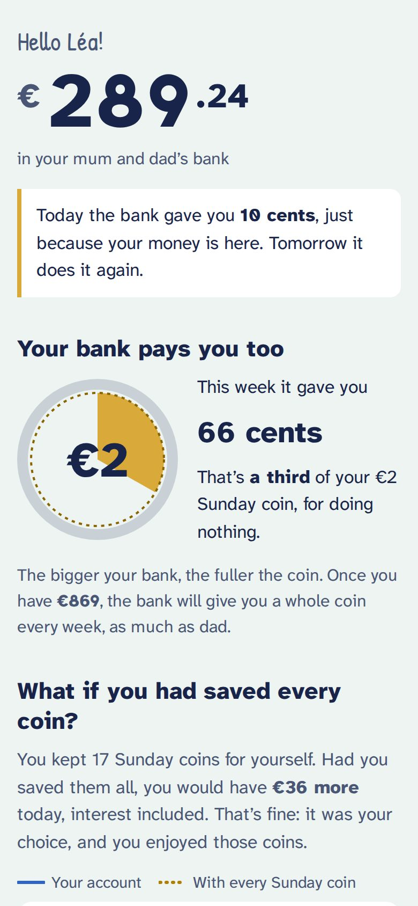
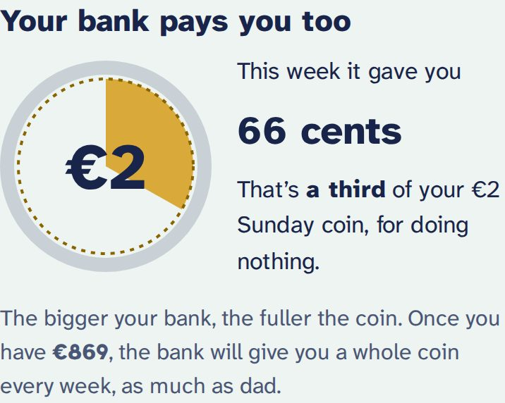
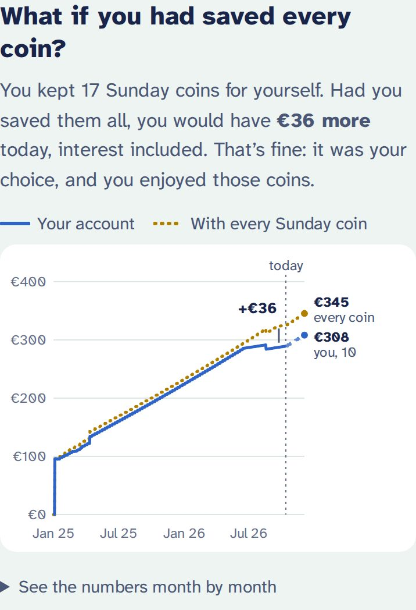
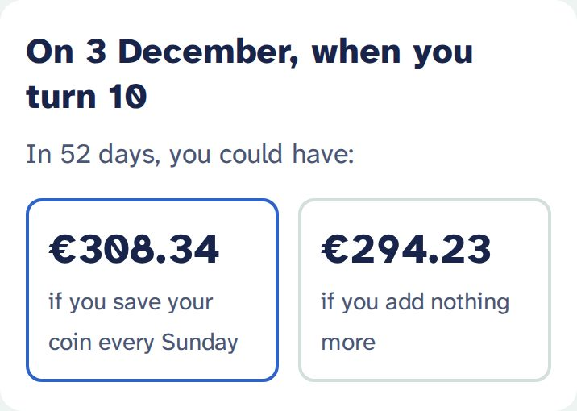
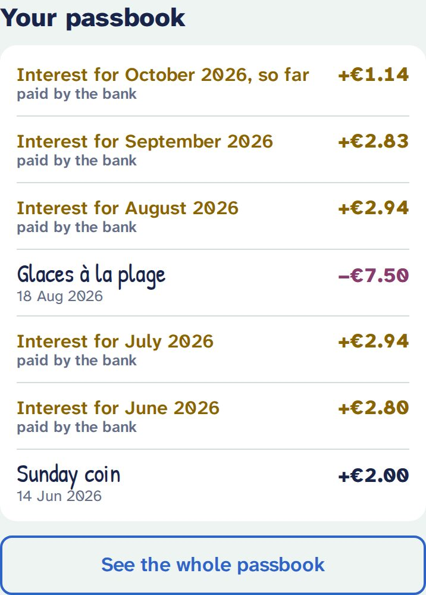
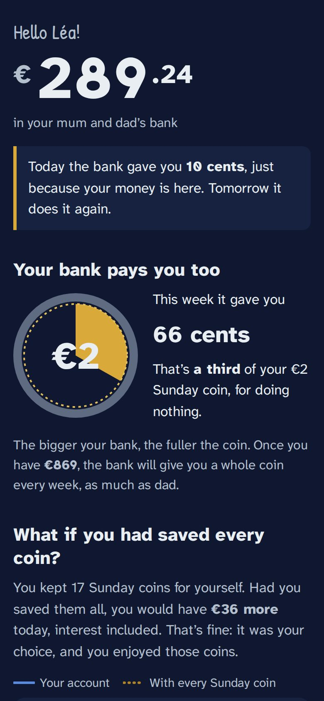

What children see
Your child has their own page, which opens like an app from their home screen. They look; they cannot change anything. Here is what they find, top to bottom. The screenshots show a bank switched to English; by default it is in French.
Their money, and what the bank gave them today
“Hello Léa!”, then the balance in big digits. Just below: “Today the bank gave you 10 cents, just because your money is here. Tomorrow it does it again.”
Interest is calculated every day on the previous day’s money. That is the heart of the idea: money that stays in the bank grows on its own, a little every day.

“Your bank pays you too”: the filling coin
A €2 coin fills up with the week’s interest: “a third of your €2 Sunday coin, for doing nothing”. The bigger the bank, the fuller the coin.
Below it, a concrete goal: “Once you have €869, the bank will give you a whole coin every week.”

“What if you had saved every coin?”
- The blue line: their account. Solid up to today, dashed afterwards (“if you keep going”).
- The dotted gold line: what they would have if every coin they kept had gone to the bank.
The gap is explained without blame: “That’s fine: it was your choice, and you enjoyed those coins.” Touching the chart shows the amounts at each date; “See the numbers month by month” gives the table.
Only coins you marked kept count here. A Sunday still “to catch up” never counts against your child.

For their birthday
Two futures side by side: what they could have on their next birthday if they save their coin every Sunday, and if they add nothing more. Without a birthday, the card says “In 6 months”.

Their passbook
Like a real savings passbook, newest first:
- deposits and withdrawals, with the note you wrote for them, in handwriting;
- the Sunday coins put in the bank;
- every month, a gold line “Interest for September 2026, paid by the bank”.

What they never see
- Your private notes. They never leave your parent space: they are not even in your child’s encrypted file.
- Any button to change anything, and any way into your parent space.
Good to know
- Without a network: once opened, the page also shows offline, marked “Updated on …”. Today’s interest is recalculated on the phone.
- Updates: your child sees your changes the next time they open their page.
- Several children on one device: the app asks who is looking (« Qui regarde sa banque ? », in French), and offers “Switch child” at the bottom of the page.
- The language is the one you choose in your settings, whatever their phone is set to.
- The page follows the phone’s dark mode.
- Lost link, or shared by mistake: create a new link from your space. The old one shows “This link no longer works. Ask your parents for a new one.”

Talking about it together
- Look at the coin together each week: “See, the bank gave you a third of a coin this week, and you did nothing.”
- Keeping a coin is allowed. The gold line shows what it costs, without scolding. It is their choice.
- The two birthday futures make an abstract idea concrete: waiting pays.
- The 12 % rate is deliberately generous so that it shows. A real bank pays much less: a good topic for later.